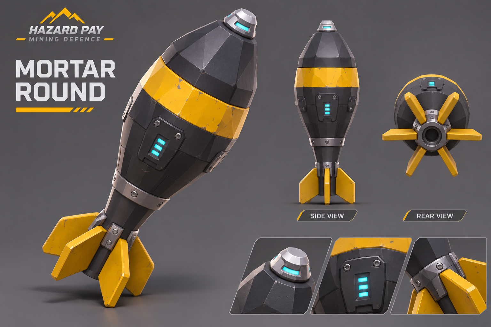

Hazard Pay — faster jam progression
Earlier equipment
Prices on the upgrade map are multiplied by 0.68: the previous 20% reduction, followed by another 15% reduction. Machine-panel upgrade prices retain their existing separate balance.
| Available operation | Unlocks |
|---|
| 2 — after the first successful operation | Shotgun, mines and Field R&D |
| 3 | Sentry and tracking |
| 4 | AR and Scatter Specialist |
| 5 | Mortar |
| 6 | Rotary emplacement and later-tier research |
AR now branches from shotgun; mortar branches from sentry. Prerequisites and prices still apply.
Early Field R&D
Buying Field R&D places the animated station beside the company tent. Approach and press E. The initial support list offers a 60-second security drone for 90 camp credits and a destructible barricade for 15 refined ore. One drone can operate at a time; up to three barricades can be deployed. Barricades appear ahead of the player in clear space and can be repositioned in Arrange Camp. Rig raiders consider nearby barricades attack targets.
Drone battery, barricade health and placements are captured within the existing company save. Menu controls support mouse clicks and Up/Down + Enter. The remaining proposed R&D catalogue is still future work.
Combat and reliability
- Ammo pickup prioritizes the equipped gun, then fills reserves on other carried guns. Full pistol reserves no longer block all collection.
- Mine blast radius: 5 metres. Short double-beep and roughly 0.45-second fuse before explosion.
- Explosion visuals: mine scale 2.5; mortar scale 3.2.
- Spawn candidates check ground, obstacles and 1.8-metre spacing. If no slot is clear, spawning waits instead of stacking enemies.
- Last enemies receive faster stalled recovery; shallow buried positions also qualify for recovery.
- Approach speeds vary slightly, with occasional collision-checked lateral dodges.
The original reported stuck-spider save was not available. These changes address the detected failure paths; they cannot prove every possible stall is eliminated.Choose spider-hit cracking sounds
These options have verified CC0 listings. They are suggestions for selection, not replacements already installed.
My suggested first test is A, using several variants with small pitch differences.
Mortar round reference

Generated with the built-in image tool: charcoal/yellow low-poly projectile with an ogive nose, tapered tail and six stabilizing fins. This is a modeling reference; the in-game mortar ammunition mesh has not been replaced in this pass.